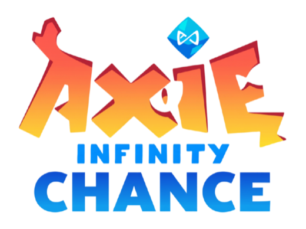
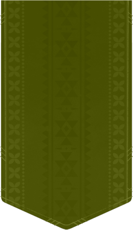
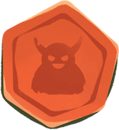
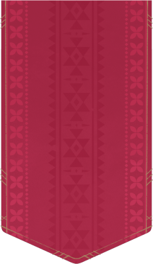
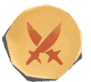
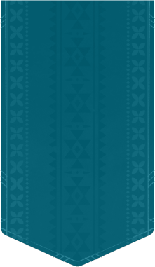
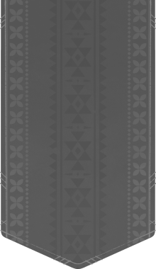
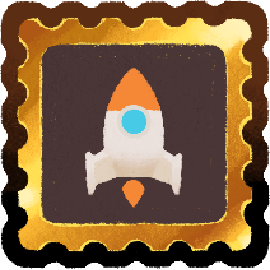

Configuración
Sonido

Modo de juego






Creado por: MikhChest
Elegí tu Axie
Inventario
Mazo
Mochila
Evolución
Símbolos del mazo
Cartas favorables
Taller
Crear cartas
Cartas sueltas para tu mochila, con símbolos al azar.
Probabilidades
Salas
Es un combate de cartas táctico push-your-luck. Elegís uno de los seis Axies —uno por clase— y peleás con su mazo personal contra el rival. Los dos arrancan con 150 de vida.
En Vs CPU jugás contra la máquina, que compite con un Axie sorteado. En Multijugador jugás en red con otra persona en salas privadas con código. Quién abre se sortea al empezar la partida: cerrar el intercambio —ver el golpe del otro antes de decidir el tuyo— es una ventaja táctica. Se puede abandonar desde el menú: en las primeras 5 rondas la partida se anula sin ganador; después, gana quien se queda.
La Última Chance: Si te quedás sin vida antes de haber atacado en el intercambio, no morís en el acto: jugás tu turno normal. Si tu golpe deja sin vida al otro también, la partida termina en empate.
Se turnan. En tu turno te reparten una carta y vas cargando el ataque: cada carta que robás lo hace más fuerte, pero si la cadena se corta el golpe falla. Cuando te plantás, soltás el ataque: los puntos de tu cadena son el daño que le hacés al rival. Ahí mismo te llevás cartas del centro para tu mazo, y luego ataca el otro. Al cerrar la ronda, se resuelve el veneno y se comprueba la vida.
Las cadenas arrancan en la primera carta de tu turno: cada símbolo distinto que tiene abre una cadena. Cada carta que robás debe compartir al menos un símbolo con las cadenas que siguen vivas. Las cadenas cuyos símbolos no aparecen quedan congeladas conservando su largo.
Si la carta nueva no comparte ningún símbolo vivo, se corta todo: el ataque se desarma y hace 0 de daño.
Cada cadena golpea por su largo al cuadrado. Solo puntúan los símbolos que estaban en la primera carta.
Tocá un Axie —el tuyo o el del rival— para ver su mazo entero: las ocho de fábrica y todo lo que fue sumando del centro.
Cada jugador roba de su mazo inicial de 8 cartas, construido alrededor de su clase: 5 pares con su símbolo, 1 carta solitaria de su símbolo y 2 cartas ajenas. Los mazos iniciales no traen poderes.
Mejoras (+): En la pantalla de elección de tu Axie podés añadir un símbolo extra a cada carta: las de tu clase admiten el tuyo; las ajenas, uno de sus dos símbolos. El símbolo repetido cuenta cada aparición, acelerando la racha al cuadrado.
Sin descarte: Al inicio de cada intercambio se rebaraja el mazo completo (lo jugado y lo sumado). Las cartas que salieron no se repiten dentro de la misma ronda.
En el centro hay siempre 6 cartas boca arriba, sacadas de una reserva de 86 cartas: 35 sin poder, 36 con poder (6 por cada poder activo) y 15 cartas comodín Free Game. Al llevarse una carta, se repone al instante. Al terminar tu turno te llevás:
Algunas cartas traen un poder. No cuenta para la cadena: se activa en uno de tres momentos, y su etiqueta te dice cuál.
Todos los poderes, con lo que hace cada uno, están en Símbolos especiales.
Campaña de 6 niveles progresivos donde se desbloquean 2 nuevos poderes de clase por nivel. En el Nivel 1: Primeros Pasos ya están activos Charm of Power (Bestia), Leafy Pot (Planta) y las 15 cartas comodín neutrales Rocket Stamp.
Axie Infinity Vibeathon · Web, sin instalar nada · 3–4 minutos por partida
Encadená símbolos mientras te animes. Cada carta que robás hace tu golpe más grande; una sola carta que no conecta te lo borra entero. Eso es todo lo que hay que entender para jugar, y es todo lo que hace falta para no poder parar.
Los juegos competitivos de Ronin piden lo mismo de entrada: aprender un árbol de habilidades, memorizar un meta de cartas, entender una economía antes de divertirse. Son juegos excelentes para el que ya está adentro.
Axie Chance apunta al otro lado del embudo. Su mecánica es tan simple que se explica en una frase y se entiende en un turno, pero la decisión que propone —¿robo una más o me planto?— es la misma que sostiene a los juegos de mesa más adictivos de la historia. Esa combinación abre una categoría que el ecosistema todavía no tiene:
Es el juego que un jugador de Axie le pasa a un amigo que nunca tocó Axie.
En tu turno robás de tu mazo personal. La primera carta abre una o más cadenas (una por cada símbolo que trae). Cada carta siguiente tiene que compartir al menos un símbolo con alguna cadena viva: si lo hace, la alarga. Si no comparte ninguno con ninguna cadena viva, se corta la cadena y tu ataque de esa ronda vale 0.
En cualquier momento podés plantarte y descargar el daño acumulado sobre el Axie rival.
Eso es el juego entero. Dos botones: robar o plantarse.
El daño es cuadrático, no lineal. Una racha de 2 vale 4, una de 3 vale 9, una de 4 vale 16. Cada carta extra vale mucho más que la anterior, así que el juego te empuja permanentemente hacia adelante mientras el riesgo crece a la par. No es una decisión matemática fría: es una tentación.
La codicia tiene forma visible. La rueda de probabilidades te dice, carta a carta, qué chance real tenés de seguir vivo. Se pinta de verde a rojo delante tuyo. Nadie se corta "por mala suerte": se corta porque decidió ir por una más con el 40% en la cara.
Cada turno es una historia con final. Salís con una racha corta y segura, o vas por la cadena de cinco y volvés con 25 de daño y las manos temblando, o te cortás en la última y no te llevás nada. Tres minutos de partida son diez historias así.
Las rachas múltiples dan profundidad sin dar complejidad. Una carta de apertura con tres símbolos abre tres caminos en paralelo; los que no conectan quedan congelados, guardando lo que ya ganaron. El jugador nuevo ve "muchas chances de seguir". El jugador experto ve un árbol de decisiones. Los dos están jugando bien.
Tu mazo cambia mientras jugás. Al terminar cada turno elegís del mercado central —seis cartas boca arriba, compartidas— y lo que elegís se baraja en tu mazo al instante. Un ataque exitoso te deja llevarte una carta con poder o dos cartas simples; un bust te deja una simple, para que la partida perdida nunca sea una partida muerta. Nadie queda fuera de la remontada.
Los poderes son personajes, no estadísticas. El frasco de veneno que se revolea, el huevo que rebota y te deja un escudo que contraataca al romperse, el caracol que frena el próximo golpe rival a la mitad, la bebida energética que se vuelca sobre el número de daño y lo hace subir contando. Doce poderes de clase, seis activos por partida —uno por clase—, cada uno con su gesto, su sonido y su momento. El jugador no aprende una tabla: se acuerda del pulpo.
El final tiene un último aliento. Quien queda en 0 HP recibe una Última Chance: un turno más, con halo de fuego, para llevarse al rival puesto. Si lo logra, la partida termina en empate. Muchas partidas se deciden ahí, y todas las que se deciden ahí se cuentan después.
El reloj mantiene el pulso. 30 segundos para decidir, 20 por elección en el mercado. Nunca hay tiempo muerto, nunca hay parálisis por análisis.
La integración con Axie Core no es un skin ni una ventaja comprada: es matemática de consistencia. Cada Axie entra a la arena con un mazo de 8 cartas derivado de su genética:
Part Evolution como reductor de varianza. Evolucionar una parte on-chain agrega un tercer símbolo a la carta de esa parte. Eso no sube el daño directamente: multiplica las formas de conectar. Más conexiones significan menos cortes, cadenas más largas y la libertad de jugar más agresivo. La evolución no necesariamente te hace pegar más fuerte; te hace animarte más.
La progresión a mediano plazo tiene un solo objetivo de diseño: darle al jugador cosas para fabricar sin romper la tensión de la mesa.
Amuletos con vencimiento. Los poderes van a poder craftearse como amuletos de uso limitado: duran una cantidad de partidas, de rondas o de activaciones, y después se consumen. Se fabrican con lo que se gana jugando, se equipan antes del duelo y se sienten mientras duran.
Por qué expiran:
Este es el pilar de diseño que sostiene todo lo anterior.
Incluso con todo maximizado, podés perder. Un jugador con cada parte evolucionada, el mejor mazo y los amuletos más caros equipados sigue estando a una carta de cortarse. Las mejoras mueven la probabilidad, jamás la eliminan. El techo del juego no es la certeza: es una chance muy buena.
Esto vale por tres razones, y las tres son comerciales tanto como de diseño:
En Axie Chance la suerte no es lo que te pasa: es lo que decidís tentar. Y siempre, siempre, hay una chance.
Algunas cartas traen un poder. No cuenta para la cadena: su etiqueta dice cuándo se activa.
